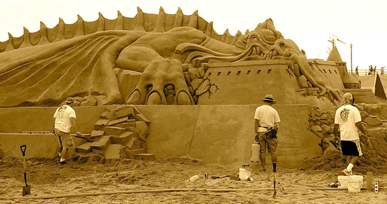
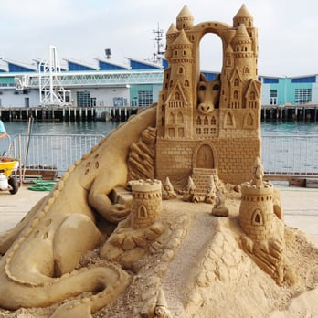

A simple sandcastle built
from a shaped plastic bucket
Sand grains will always stick together unless the sand is reasonably fine. While dry sand is loose, wet sand is adherent if the proper amounts of sand and water are used in the mixture. The reason for this is that water forms little "bridges" between the grains of sand when it is damp due to the forces of surface tension.[1]
When the sand dries out or gets wet, the shape of a structure may change, and "landslides" are common. Furthermore, the mixture of fine (mostly sharper) and coarse sand granules is very important to achieve good "sand construction" results. Fine granules that have been rounded by the natural influences of seas, rivers or fluvials, in turn negatively influence the bonding between the individual granules as they more easily slide past each other. Research[2] is thus necessary to find the most suitable sand to achieve an optimal, landslide-free construction.
Shovels and buckets are the main construction tools used in creating sand castles and sand sculptures, although some people use only their hands. A simple sand castle can be made by filling a bucket with damp sand, placing it upside-down on the beach, and removing the bucket. For larger constructions, water from the sea to mix with the sand can be brought to the building site with a bucket or other container. Sometimes other materials, such as pieces of wood and plastic are constructed to hold piles of sand in place and in specific shapes - these are called forms.

This is the second part
We built sandcastles that washed away
I made you cry when I walked away
And although I promised that I couldn't stay, baby
Every promise don't work out that way, oh, babe
Every promise don't work out that way
[Verse 2]
Dishes smashed on my counter from our last encounter
Pictures snatched out the frame
Bitch, I scratched out your name and your face
What is it about you that I can't erase, baby?
When every promise don't work out that way, no no, babe
When every promise don't work out that way
[Verse 3]
And your heart is broken 'cause I walked away
Show me your scars and I won't walk away
And I know I promised that I couldn't stay, baby
Every promise don't work out that way, no no no no no
Every promise don't work out that way
